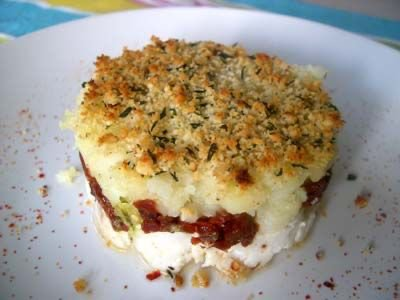

Parmentier de cabillaud
Ingredients
2×
- 1 tranche de pain de mie sans croûte
- 1 c. à s. de pignons
- 2 c. à s. de thym frais
- 70 g de tomates séchées
- 200 g de cabillaud
- 2 c. à c. de jus de citron
- huile d'olive
- 2 c. à c. de pesto
- purée à l'huile d'olive

Préparation
Étape 1
Préchauffer le four à 200ºC.
Étape 2
Mixer 1 tranche de pain de mie sans croûte avec 1 c. à s. de pignons et 2 c. à s. de thym frais jusqu’à obtenir une chapelure.
Étape 3
Couper 70 g de tomates séchées en petits morceaux. Couper 200 g de cabillaud cru en cubes de 2cm, saler, poivrer, ajouter 2 c. à c. de jus de citron et mélanger.
Étape 4
Huiler des cercles avec un peu d’huile d'olive et les poser sur une plaque. Garnir de poisson, étaler 1 cac des 2 c. à c. de pesto par cercle, puis ajouter les tomates séchées.
Étape 5
Remplir de purée à l'huile d'olive en tassant avec le dos d’une cuillère, puis parsemer d’1 cas de chapelure au thym.
Étape 6
Enfourner 10min (cercles individuels).